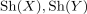
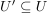
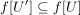
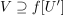
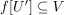

inverse image sheaf
1. Definition
Let  and
and  be topological spaces and
be topological spaces and  a continuous map.
Given a (sufficiently) bicomplete category
a continuous map.
Given a (sufficiently) bicomplete category  the
the  -valued category of sheaves
-valued category of sheaves

, the inverse image sheaf of a sheaf is given as sheafification ofwhere the morphism is given by applying the universal property, since for

it follows, that
and hence for

also
functorality follows analogously to the colim functor